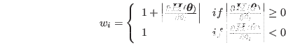
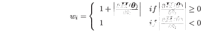
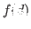
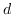
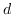
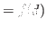
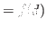

Next: 衝突回避計算例 Up: ロボットの動作生成 Previous: 衝突回避を含む逆運動学 Contents Index
![[*]](crossref.png) で得られる.
以下ではの添字は衝突回避計算のための成分を表し,
の部分は衝突回避計算以外のタスク目標を表すことにする.
で得られる.
以下ではの添字は衝突回避計算のための成分を表し,
の部分は衝突回避計算以外のタスク目標を表すことにする.
blending係数は,
リンク間距離 と閾値・の関数として計算される
(Equation ).
と閾値・の関数として計算される
(Equation ).
は衝突回避計算を行い始める値
(yellow zone@xdefthefnmarkfootnotemark)であり,
は目標タスクを阻害しても衝突回避を行う閾値
(orange zone@xdefthefnmarkfootnotemark)である.
衝突計算をする2リンク間の最短距離・最近傍点が計算できた場合の 衝突を回避するための動作戦略は 2リンク間に作用する仮想的な反力ポテンシャルから導出される.
2リンク間の最近傍点同士をつなぐベクトル
 を用いた
2リンク間反力から導出される速度計算を
Equation
に記す.
を用いた
2リンク間反力から導出される速度計算を
Equation
に記す.
これを用いた関節角速度計算はEquation
となる.
 
